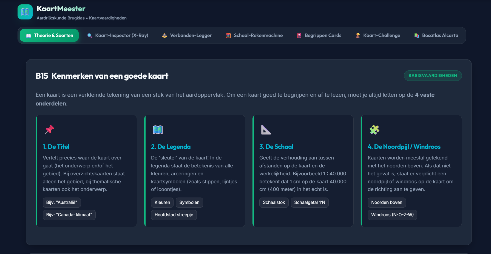

Start animatie →
Thema 1 • Vaardigheden • § 1.4 Werkwijzen • § 1.5 Kaarten • § 1.7 Plaatsbepaling
KaartMeester – Interactieve Kaartvaardigheden
Interactieve kaartlessen waarin leerlingen oefenen met schaalberekeningen, coördinaten bepalen en windrichtingen via 3 duidelijke niveaus.